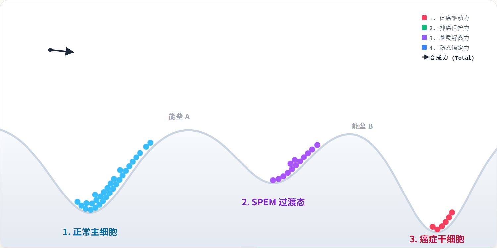

在 胃癌这场残酷的微观战争中，癌细胞并不是唯一的反派。一项结合了单细胞测序与空间转录组学的前沿研究揭示，肿瘤干细胞正藏身于一个由免疫细胞和成纤维细胞共同织就的“阴影帝国”中。理解了这个“微环境生态位”的通讯密码，或许我们就能找到拔除癌症之根的终极武器。
寻找“打不死”的种子
在临床医生眼中，胃癌（Gastric Cancer, GC）是一个极其狡猾的对手。尽管手术和化疗手段不断进步，但晚期患者的预后依然不容乐观。最令医学界头疼的现象莫过于“野火烧不尽”——即便最先进的治疗手段清除掉了一部分病灶，肿瘤仍往往会像幽灵般卷土重来。
这个幽灵的真身，就是肿瘤干细胞（Cancer Stem Cells, CSCs）。它们是肿瘤内部的一群“原始原住民”，数量稀少却拥有无限的自我复制和多向分化潜能。它们就像是驱动癌症生长的“种子”，对传统化疗具有极强的免疫力和耐药性。
然而，种子若要萌发，必须有合适的土壤。科学家逐渐意识到，CSCs并非孤军奋战，它们栖息在一个被称为“干细胞生态位”（CSC Niche）的复杂环境里。这个生态位由多种免疫细胞、基质细胞以及可溶性因子交织而成，它们为 CSCs 提供养分、发出信号，并构建出一道躲避免疫追捕的隐形护盾。
长期以来，这片“土壤”内部的运作机制由于缺乏高分辨率的观测手段，始终笼罩在迷雾中。直到最近，由张敏（Min Zhang）教授等领导的一项发表在《Advanced Science》上的研究，利用单细胞RNA测序（scRNA-seq）和空间转录组学技术，终于为我们绘制出了一张胃癌“生命暗网”的全景图。
微观世界的“谷歌地球”与身份窃取之谜
想要理解癌症的演化，就必须从最基础的细胞层面看清它的变迁。研究团队对来自28名患者的胃粘膜组织（涵盖正常、胃炎、化生到癌症的完整阶段）进行了精密拆解，共获得了超过12万个高质量细胞的转录数据。
这项研究就像是为胃粘膜打造了一份“细胞级谷歌地球”。在传统的病理切片下，我们只能看到一片混乱的细胞海洋；但在单细胞测序的视角下，科学家可以清晰地分辨出每一类细胞的身份：从勤劳的分泌细胞到阴暗的恶性细胞，每一种细胞的“户籍”和“活动日志”都清晰可见。
更令人震惊的发现源于对“身份转变”的追踪。长期以来，胃癌干细胞的来源一直存在争议：它们是从现成的胃干细胞变异而来的，还是由普通细胞逆向演化而成的？
通过复杂的算法模拟细胞演化轨迹，研究团队揭示了一条名为“黑暗进化”的路径：原本负责分泌消化酶的成熟胃主细胞（Mature Gastric Chief Cells），在某种病理压力的刺激下，竟然发生了惊人的“身份窃取”。它们首先转化为一种中间状态（SPEM细胞，一种萎缩性胃炎中的化生细胞），最终彻底沦落为凶残的肿瘤干细胞。
在这一过程中，EGFR（表皮生长因子受体）和WNT信号通路被异常激活，充当了“进化加速器”，推动着这些本该为人体服务的细胞跨越恶性的鸿沟。这不仅证实了肿瘤干细胞的强大可塑性，也为我们早期预测胃癌的恶化路径提供了全新的生物标志物。

共犯结构——谁在护送“种子”逃亡？
如果说 CSCs 是逃亡的通缉犯，那么它们周围的免疫细胞就是一群被“策反”的保镖。
研究人员利用空间转录组技术，将数以万计的细胞放回它们原本在组织中的精确位置。他们惊讶地发现，肿瘤干细胞并非随机分布，它们总是被特定的、具有免疫抑制功能的细胞群层层包围。
首当其冲的是一群被称为CXCL13+ T细胞和CCL18+ M2型巨噬细胞的群体。在健康的免疫系统中，T细胞本应是冲锋陷阵的战士，负责识别并处决癌细胞。然而，在这片受污染的土壤中，这些T细胞却表现出严重的“职业耗竭”。
研究揭示了一个精密的“握手协议”：肿瘤干细胞表面表达一种名为NECTIN2/3的配体，它能精准地与T细胞表面的抑制性受体TIGIT结合。这种结合就像是一次带有恶意代码的握手，向T细胞发送了“休兵”信号，使其丧失战斗力。
与此同时，CCL18+ 巨噬细胞则扮演了“清道夫内鬼”的角色。它们不仅没有清除异常细胞，反而通过释放THBS1和FN1等信号分子，进一步巩固了肿瘤干细胞的稳定性。这种空间上的紧密互动，构建了一个免疫逃逸的“安全屋”，使得 CSCs 能够在人体眼皮子底下肆无忌惮地扩增。临床数据证实，这种保镖团队越庞大，患者的生存预后就越差。

肥料供应线——iCAFs 的致命温床
如果说免疫抑制是“保护伞”，那么成纤维细胞提供的则是让种子疯长的“肥料”。
在胃癌微环境中，科学家发现了一类特殊的“勤杂工”——炎症性肿瘤相关成纤维细胞（iCAFs）。这些细胞从普通的基质细胞演化而来，却变得异常活跃。它们不仅能重塑细胞外基质，更通过分泌一种名为双调蛋白（Amphiregulin, AREG）的关键因子，直接介入了癌症的生长逻辑。 这便是研究中最为核心的发现：AREG-ERBB2轴。iCAFs大量生产 AREG 分子，这些分子像精准导弹一样落到肿瘤细胞表面的 ERBB2 受体上。接收到信号后的肿瘤细胞会迅速上调SOX9 和OLFM4基因的表达——这两个基因正是维持细胞“干性”的核心指令。
这意味着，iCAFs 实际上是在不断地为肿瘤细胞“重置系统”，强制让它们保持在最原始、最顽强的干细胞状态。
更具临床价值的是，这一机制还解释了化疗耐药的根源。实验显示，当 AREG 分子持续刺激 ERBB2 受体时，传统的靶向药物效果会大打折扣。这就像是给敌军阵地空投了源源不断的补给箱，无论我方炮火（化疗）如何猛烈，敌方总能迅速修复损伤并卷土重来。通过干扰这一供应链，研究人员发现可以显著降低肿瘤细胞的侵袭性并提高对药物的敏感度。
瓦解“暗网”的未来蓝图
这项研究为我们揭示的不仅是疾病的机制，更是反击的路线图。
既然我们已经解析了胃癌干细胞生态位的“朋友圈”和“补给线”，精准医疗的方向便明朗了起来。未来的治疗可能不再仅仅盯着癌细胞本身，而是通过“多点爆破”来摧毁整个暗网：
铲除毒性土壤
开发针对 iCAFs 或 AREG-ERBB2 信号轴的抑制剂，切断肿瘤干细胞的养分供应。
拆除免疫屏障
利用针对 TIGIT 或相关节点的抗体，激活被“策反”的免疫细胞，让它们重新认清敌人。
阻断身份逆转
在胃炎和化生阶段干预 EGFR/WNT 信号，防止成熟细胞沦为干细胞种子。
癌症治疗正从“寻找单一靶点”转向“系统生态治理”。当我们能从细胞坐标系中精准锁定每一场“阴谋”发生的地点和方式时，那颗名为胃癌的顽固种子，终将失去它赖以生存的最后一片土壤。